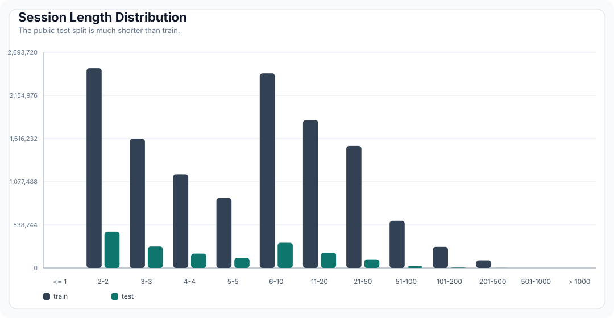
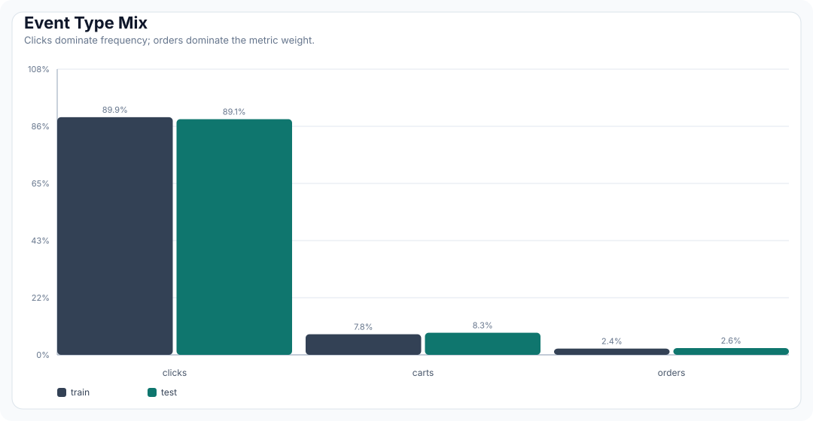
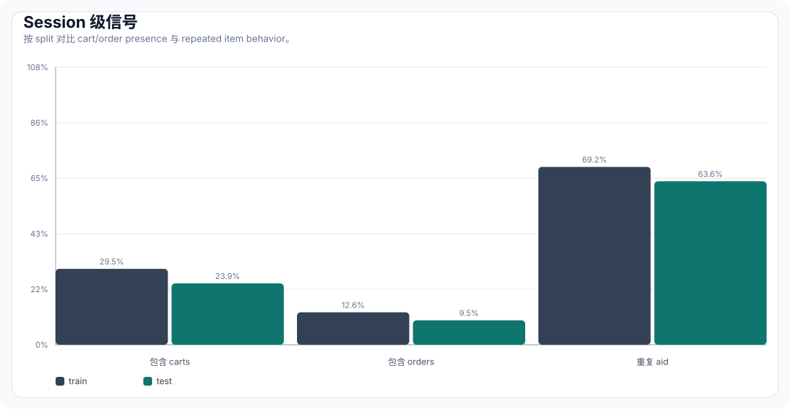
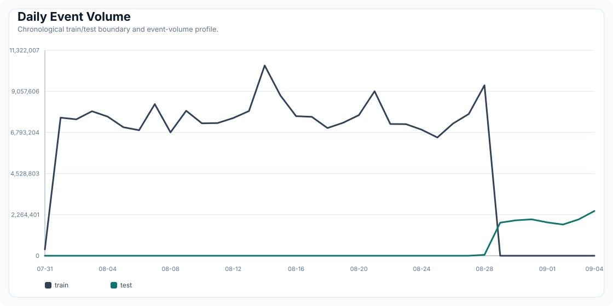
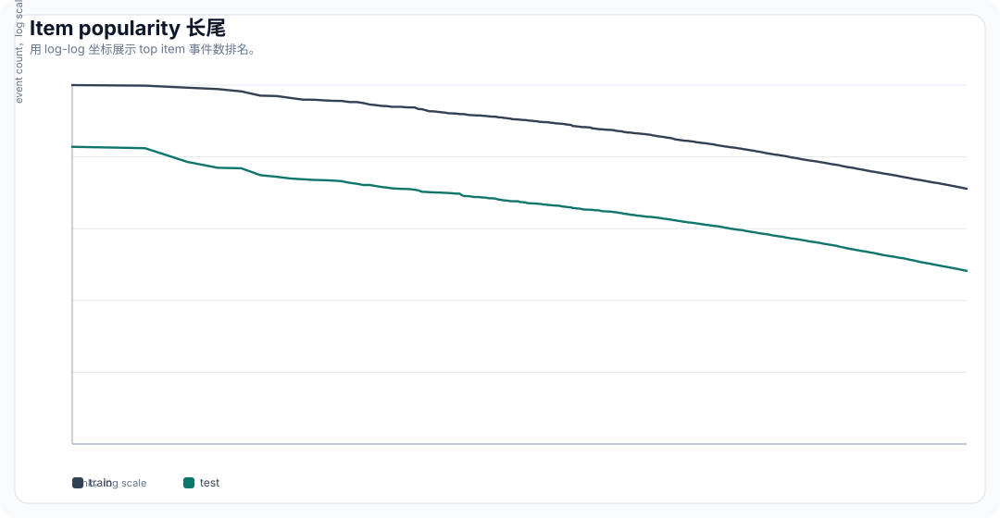
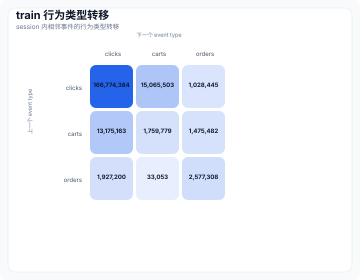
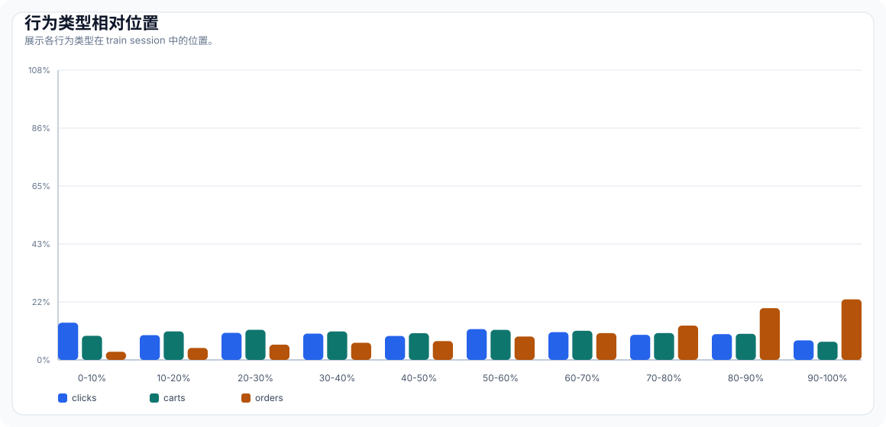

Data & EDA¶
Executive Summary¶
This page summarizes a full-dataset EDA pass for the Kaggle OTTO session dataset. The analysis treats EDA as scouting for feature engineering: every statistic should either validate the data contract, expose a modeling risk, or suggest a concrete baseline, candidate, feature, or validation decision.
Key findings:
- The task is strongly session-driven: repeated item interactions are common and should be included as a first candidate source.
- The public test split has much shorter sessions than train, so fallback and short-session strategies are not optional.
- Clicks dominate event volume, while orders dominate the metric weight; target-specific candidates and ranking are needed.
- Item popularity is extremely long-tailed, making top-popularity fallback useful but insufficient.
- Train and test are chronological neighbors; validation should be time-based and should explicitly guard against leakage.
Feature Scouting Summary¶
| EDA signal | What it says | Feature/candidate action |
|---|---|---|
| Test sessions are short | Test mean length is 8.29 vs train 16.80; test p50 is only 4 events | Build a short-session path: recent unique aids + type-specific popularity + recent popularity |
| Repeated aids are common | 69.20% of train sessions and 63.61% of test sessions repeat an item | Add aid_count_in_session, last_seen_rank, first_seen_rank, and repeated-aid flags |
| Orders happen late | In train, 54.66% of order events occur in the final 30% of a session; in test, 73.75% do | Weight late-session events more heavily for order candidates and ranking |
| Cart-to-order transition is meaningful | cart->order conditional probability is 8.99% in train and 9.77% in test |
Build cart-to-order co-visitation and cart/order-specific item features |
| Top popularity drifts | Top100 train/test item overlap is 47 items; Jaccard is 0.3072 | Compare global, recent-window, and target-specific popularity |
| No cold test items | 100% of test aids appear in train | Candidate generation can focus on observed item graph; cold-start is not the main bottleneck |
Full Data Scale¶
| split | sessions | events | unique_aids | min_ts_utc | max_ts_utc |
|---|---|---|---|---|---|
| train | 12,899,779 | 216,716,096 | 1,855,603 | 2022-07-31T22:00:00.025000+00:00 | 2022-08-28T21:59:59.984000+00:00 |
| test | 1,671,803 | 13,851,293 | 1,019,357 | 2022-08-28T22:00:00.278000+00:00 | 2022-09-04T21:59:59.984000+00:00 |
Schema Contract¶
| Field | Level | Type | Meaning | Feature-engineering use |
|---|---|---|---|---|
session |
session | integer | Anonymous session id | Group key, validation label key, submission key |
events |
session | list | Ordered event sequence | Session history, sequence features |
aid |
event | integer | Item id | Candidate id, item features, co-visitation entity |
ts |
event | integer | Millisecond timestamp | Time split, recency, drift, co-visitation windows |
type |
event | string | clicks, carts, orders |
Target-specific labels, weights, and features |
Recommended event-level table:
Session Length¶

| split | mean | p50 | p75 | p90 | p95 | p99 | max |
|---|---|---|---|---|---|---|---|
| train | 16.80 | 6 | 15 | 39 | 68 | 176 | 500 |
| test | 8.29 | 4 | 8 | 18 | 28 | 64 | 498 |
Feature implications:
- Use separate logic for short sessions, where there is little history to rank.
- Keep recent unique session items as a baseline source.
- Cap or batch long sessions in co-visitation and feature jobs to avoid heavy-tail runtime spikes.
Session Intent Segments¶
| split | clicks only | clicks+carts | clicks+carts+orders | clicks+orders |
|---|---|---|---|---|
| train | 70.18% | 17.21% | 12.33% | 0.28% |
| test | 75.82% | 14.68% | 9.18% | 0.32% |
Interpretation:
- Most sessions are click-only, so the model must be strong under weak intent.
- Sessions containing both carts and orders are a minority but are highly valuable for the final metric.
- Intent segmentation should be explicit: short click-only sessions, cart sessions, and purchase-intent sessions should not share the same candidate mix.
Behavior Type Distribution¶

| split | clicks | carts | orders | clicks_ratio | carts_ratio | orders_ratio |
|---|---|---|---|---|---|---|
| train | 194,720,954 | 16,896,191 | 5,098,951 | 89.85% | 7.80% | 2.35% |
| test | 12,340,303 | 1,155,698 | 355,292 | 89.09% | 8.34% | 2.57% |
Feature implications:
- Optimize and report each target separately; weighted recall can hide target regressions.
- Orders are sparse but high value, so order-oriented candidate sources need explicit coverage checks.
- Event type should be a first-class feature, not a post-hoc display label.
Session-Level Signals¶

| split | sessions with carts | sessions with orders | sessions with repeated aid | mean unique aids/session | p50 duration sec | p95 duration sec |
|---|---|---|---|---|---|---|
| train | 29.54% | 12.61% | 69.20% | 10.36 | 185618 | 2090394 |
| test | 23.86% | 9.50% | 63.61% | 5.30 | 757 | 330819 |
Feature implications:
- Repeated-aid behavior supports count, recency, and last-seen-position features.
- Cart/order presence can define session intent segments.
- Session duration and time gaps are natural features for separating quick browsing from deliberate purchase sessions.
First and Last Event Types¶
| split | first click | first cart/order | last click | last cart | last order |
|---|---|---|---|---|---|
| train | 99.57% | 0.43% | 91.88% | 3.77% | 4.35% |
| test | 99.61% | 0.39% | 90.27% | 4.21% | 5.52% |
Interpretation:
- The first event is almost always a click, so early-session features mostly describe browsing context.
- Last-event type is more informative: a cart or order near the end is a strong intent signal.
- Candidate scoring should include last event type, last item id, and last event recency.
Temporal Structure¶

Train and test are chronological neighbors. This makes random validation inappropriate: it can leak future popularity and overstate generalization. The local validation split should mimic the test-time condition with a recent validation window and future labels.
Item Popularity and Long Tail¶

| split | unique aids | gini | top20 share | top100 share | top1000 share | one-event aid ratio | <=10-event aid ratio |
|---|---|---|---|---|---|---|---|
| train | 1,855,603 | 0.8156 | 0.80% | 2.49% | 10.13% | 0.00% | 28.76% |
| test | 1,019,357 | 0.7671 | 1.03% | 2.84% | 11.10% | 26.83% | 79.03% |
Train/Test Item Overlap¶
| metric | value |
|---|---|
| test aids seen in train | 100.00% |
| cold test aid ratio | 0.00% |
| cold test event ratio | 0.00% |
| top100 train/test aid overlap | 47 |
| top100 train/test Jaccard | 0.3072 |
Feature implications:
- Popularity and co-visitation are viable because most test interactions involve items observed in train.
- Cold or rare items still need fallback handling, especially for long-tail coverage and candidate diversity.
- Recent popularity should be compared against global popularity because top items drift over time.
Target-Specific Top Items¶
| target | train top aids | test top aids |
|---|---|---|
| clicks | 1460571, 108125, 29735, 485256, 1733943 |
1460571, 485256, 108125, 1551213, 986164 |
| carts | 485256, 152547, 33343, 166037, 1733943 |
485256, 33343, 1460571, 986164, 554660 |
| orders | 231487, 166037, 1733943, 1445562, 1022566 |
1460571, 986164, 688602, 1043508, 332654 |
Interpretation:
- Click/cart/order popularity lists differ, especially for orders.
- A single global popularity fallback is too blunt; each target should have its own fallback list.
- Recent target-specific popularity should be benchmarked against full-train target popularity.
Sequence Behavior¶


Conditional Event-Type Transitions¶
| split | from clicks | from carts | from orders |
|---|---|---|---|
| train | click 91.20%, cart 8.24%, order 0.56% | click 80.29%, cart 10.72%, order 8.99% | click 42.47%, cart 0.73%, order 56.80% |
| test | click 89.88%, cart 9.46%, order 0.66% | click 78.68%, cart 11.55%, order 9.77% | click 32.56%, cart 0.38%, order 67.06% |
Relative Position of Orders¶
| split | orders in final 30% of session | orders in final 20% of session |
|---|---|---|
| train | 54.66% | 41.87% |
| test | 73.75% | 58.87% |
Feature implications:
- Transition counts motivate type-aware co-visitation matrices such as click-to-cart and cart-to-order.
- Relative event position can become a feature: the last few events often deserve more weight than early-session noise.
- Separate first-event and last-event type distributions help design session-intent features.
- Orders are concentrated near the end of sessions, so order candidates should emphasize late events more aggressively than click candidates.
Insight to Experiment Map¶
| Insight | Evidence | Feature or method hypothesis | Experiment |
|---|---|---|---|
| Short test sessions need robust fallback | Test session length is much shorter than train | Combine session history with type-specific popularity fallback | B000, B001 |
| Repeated items are strong session signals | Large share of sessions repeat an aid |
Use recent unique aids, aid frequency in session, and last-seen position | B001_session_history_baseline |
| Orders are sparse but high weight | Order ratio is low; metric weight is 0.60 | Build order-specific candidates and features | C000_target_candidates |
| Popularity is long-tailed | High Gini and many low-frequency aids | Use popularity fallback, but measure coverage by session length and tail bucket | B000_popularity_baseline |
| Time order matters | Train/test are sequential | Use chronological validation and recent-window features | V000_time_split |
| Type transitions carry intent | Click/cart/order transitions are asymmetric | Build type-aware co-visitation and transition features | C000_covisit_baseline |
| Orders are late-session events | 54.66% of train orders and 73.75% of test orders appear in the final 30% of the session | Add position-aware and recency-weighted order features | F000_session_item_features |
| Popularity differs by target | Top order aids differ from top click/cart aids | Maintain target-specific popularity and candidate pools | B000_popularity_baseline |
Generated Artifacts¶
| Artifact | Path |
|---|---|
| Full summary JSON | reports/eda/full_eda_summary.json |
| Split summary CSV | reports/eda/split_summary.csv |
| Top aids CSV | reports/eda/top_aids_by_split.csv |
| EDA figures | site/assets/figures/*.svg |